Propeller Static Balancer

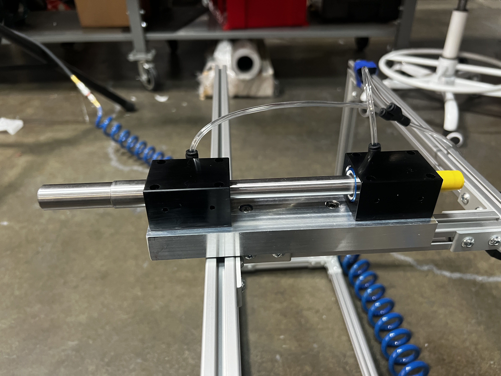
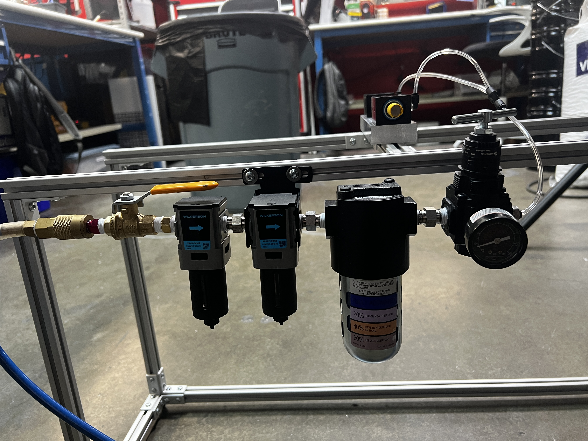
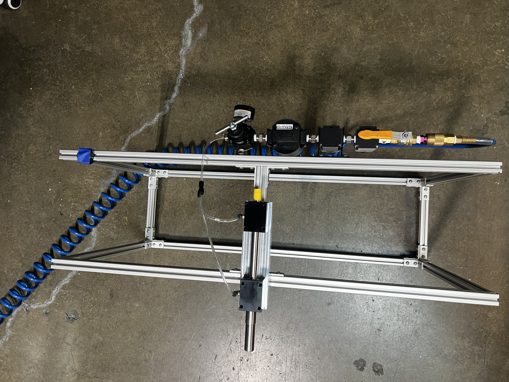
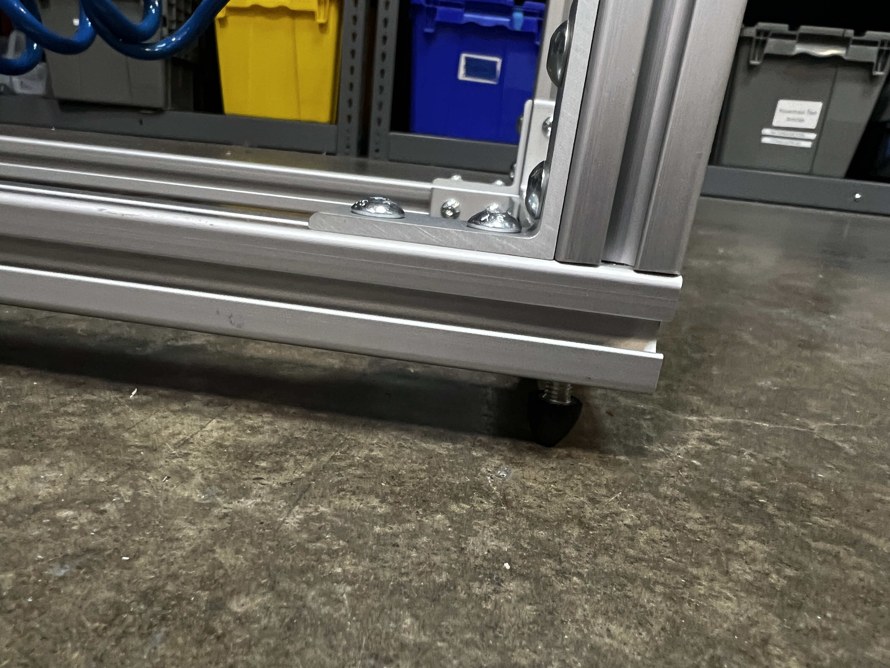
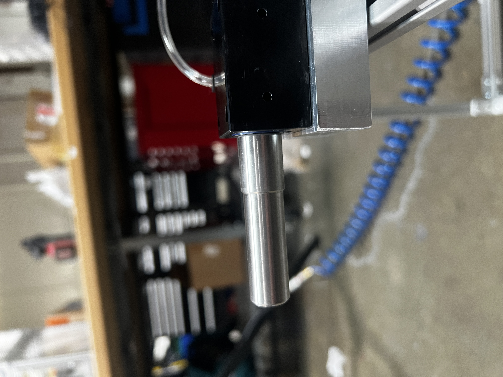

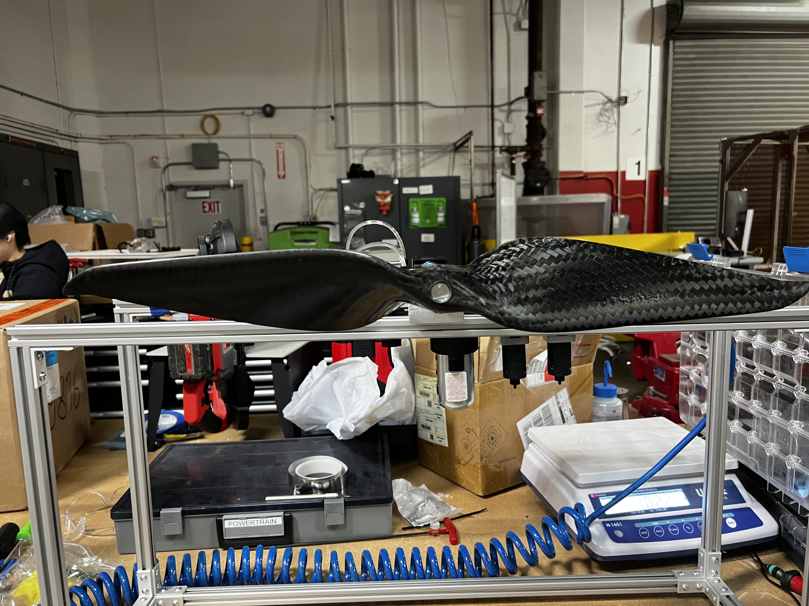
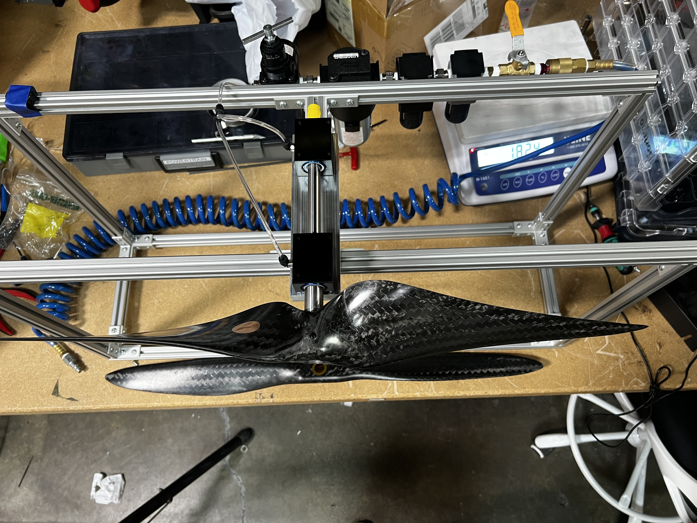
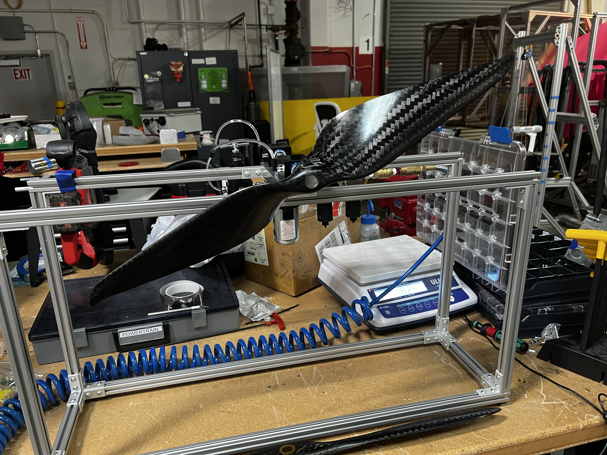
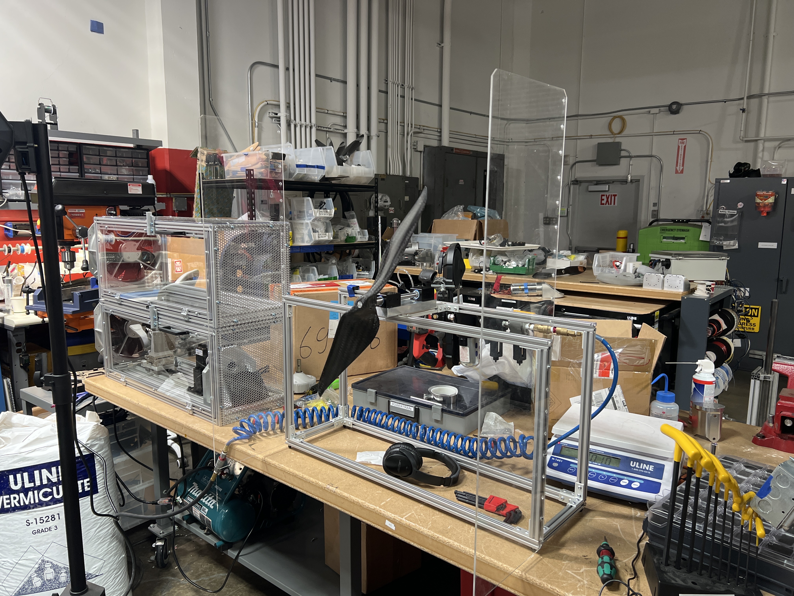
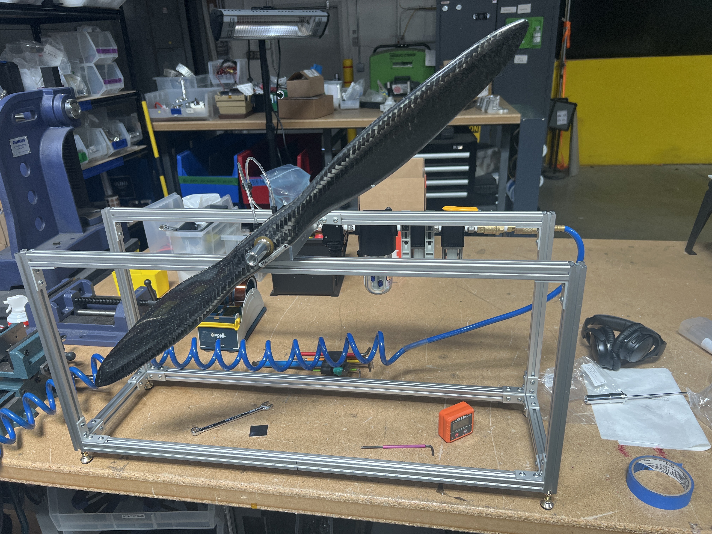
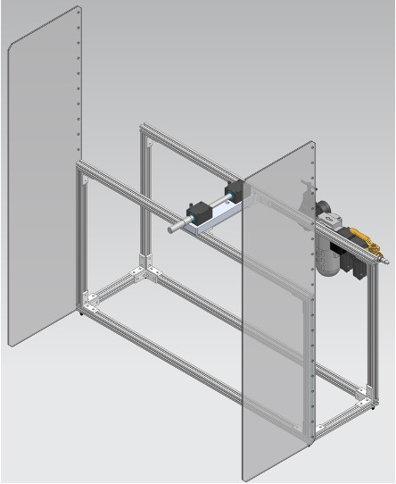
Overview
Precision matters in drone delivery. I developed an end-of-line static balancer to fine-tune quadcopter propellers, reducing vibrations and improving flight stability. The system minimizes friction using air bearings, allowing even the smallest imbalance to be detected. This upgrade cut balancing time from 5 minutes to under 30 seconds per prop—a 10x improvement.
Technical Details
- Purpose: EOL static balancer for quadcopter propellers
- Friction Reduction: Air bearings for ultra-low resistance
- Power System: Pneumatically powered
- Frame & Structure: Machined aluminum brackets, hardened SS316 shaft, aluminum extrusion frame
- Precision Design: Tight tolerances to maintain shaft straightness
- Moment of Inertia: Minimized to enhance imbalance detection
- Cycle Time: <30s per prop (previously 5 min)
- Balancing Aid: Laser pointer for counterweight positioning
- Pass/Fail Criteria: Defined limits for acceptable imbalance
Development Process
- Balancing Principle: Explained the importance of propeller balance in reducing drone vibration and improving efficiency.
- Friction Reduction: Integrated air bearings to maximize sensitivity to imbalance.
- Structural Precision: Designed aluminum brackets and a hardened steel shaft to achieve tight tolerances.
- Automation & Speed: Reduced balancing time from 5 min to under 30s with improved workflow.
- Laser Alignment: Used a laser pointer to pinpoint the optimal counterweight position.
Results
- 10x Faster - Cut balancing time from 5 minutes to under 30 seconds.
- Enhanced Precision - Air bearings and low moment of inertia improved imbalance detection.
- Repeatable & Reliable - Standardized pass/fail criteria for consistent results.